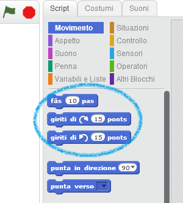
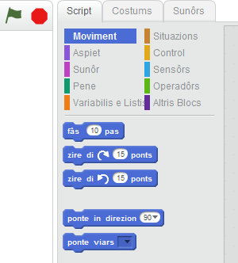
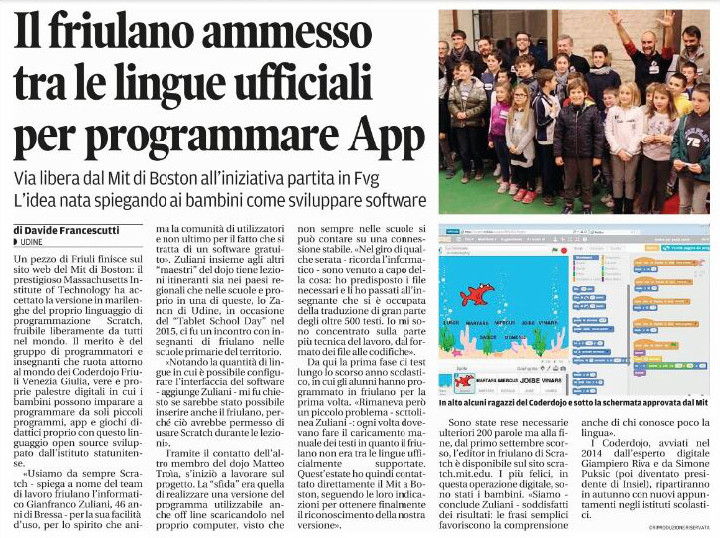

risorse | scratch in friulano
Quel che segue è una breve descrizione di come si possa tradurre l’interfaccia di Scratch 2.0 sul proprio computer senza la necessità di collegarsi al sito preposto translate.scratch.mit.edu. Le prove sono state effettuate con la versione 439a di Scratch su Windows 7 SP1 64 bit e la versione 436 su Ubuntu 14.04 64 bit.
Come primo passo è necessario recuperare il file che contiene i testi in lingua sorgente. I file di localizzazione si trovano nella sotto-cartella locale della cartella di installazione di Scratch (es. /opt/Scratch 2/share/locale su Ubuntu, C:\Program Files (x86)\Scratch 2\locale su Windows) e sono in formato po – Portable Object. Il nome del file corrisponde al codice ISO della lingua in cui è redatto; trovato quello più adatto, farne una copia in una cartella di lavoro (per esempio sul Desktop) e rinominarlo. Nel caso di una traduzione da italiano a friulano, copiare il file it.po e rinominarlo fur.po.
Essendo i file po dei file di testo dalla struttura piuttosto semplice, si può pensare di aprire il file appena copiato in un editor di testo e sostituire i testi in lingua sorgente con il corrispettivo nella lingua di traduzione. Tuttavia, se ciò è fattibile in Ubuntu (GEdit è adattissimo allo scopo) – pur con le accortezze del caso –, lo stesso non si può dire per Windows: nè il Blocco note nè Writer di LibreOffice sono in grado di trattare correttamente questo tipo di file (si tratta di testo UTF-8 senza BOM e con carattere di a-capo LF).
Nel caso si scelga di modificare direttamente il file po con un editor di testo, si deve operare nel seguente modo, avendo cura di mantenere inalterata la codifica (UTF-8 senza BOM) e il carattere di a-capo (LF):
aggiornare la specifica della lingua di traduzione in testata al file, modificando la proprietà Language; continuando l’esempio italiano/friulano,
... "Language: it\n" ...
diventa:
... "Language: fur\n" ...
tradurre i contenuti, sostituendo i testi in lingua sorgente delle righe che iniziano con il codice msgstr con il corrispondente nella lingua di traduzione; ad esempio:
... msgid "move %n steps" msgstr "fai %n passi" ... msgid "turn @turnLeft %n degrees" msgstr "ruota di @turnLeft %n gradi" msgid "turn @turnRight %n degrees" msgstr "ruota di @turnRight %n gradi" ...
diventa:
... msgid "move %n steps" msgstr "fâs %n pas" ... msgid "turn @turnLeft %n degrees" msgstr "giriti di @turnLeft %n ponts" msgid "turn @turnRight %n degrees" msgstr "giriti di @turnRight %n ponts" ...
Avvertenze:
non modificare il testo msgid, di norma in inglese, ma solo quello msgstr;
non modificare eventuali segnaposto presenti nel testo (es. @turnLeft, %c, %n, …);
non serve modificare i testi inutilizzati, cioè quelli preceduti da un cancelletto (carattere #).
Esistono diversi strumenti che consentono una traduzione più agevole dei file po, sia on-line che off-line. Uno di questi, gratuito, è Poedit.
Una volta installato e avviato il programma, selezionare l’opzione Modifica una traduzione e aprire il file fur.po da tradurre. Modificare la lingua di traduzione selezionando il comando Proprietà del menu Catalogo, quindi selezionare la lingua friulano nella casella combinata Lingua e confermare la scelta con OK:
Modifica della lingua di traduzione
La traduzione avviene selezionando di volta in volta il contenuto da tradurre e inserendo la traduzione corretta nella casella Traduzione. La traduzione avviene dunque sostituendo il testo in lingua sorgente (italiano) con il corrispettivo nella lingua di traduzione (friulano). Il testo in lingua inglese non va modificato. Al salvataggio del file, il programma produce un file ausiliario con estensione mo che può essere cancellato.
Traduzione di un testo italiano in friulano
Per verificare l’efficacia della traduzione è necessario caricare il file po in Scratch. L’operazione può essere effettuata più volte, anche se il file non è stato completamente tradotto: in questo modo si può procedere incrementalmente alla traduzione dell’interfaccia del programma, controllando di volta in volta il lavoro svolto.
Shift per accedere alla versione estesa:Versione estesa del menu di selezione della lingua
fur.po.Interfaccia originale in italiano
Interfaccia tradotta (parzialmente) in friulano
Nota: le traduzioni così caricate vengono perse alla chiusura del programma o al primo cambio lingua; possono tuttavia essere ricaricate, ripetendo la procedura appena descritta.
Una volta completata la traduzione del file conviene condividere il lavoro svolto con i responsabili della localizzazione di Scratch inviando loro il file po definitivo cosicché la nuova lingua di traduzione entri a far parte dell’elenco ufficiale di lingue supportate; per ciò, fare riferimento al sito ufficiale.
Aggiornamento [16/09/2015]
Per consentire ai suoi alunni di utilizzare Scratch durante le sue lezioni, la maestra Lorella Moretti ha tradotto in friulano l’intera interfaccia di Scrach:
Interfaccia in friulano
Il file completo è liberamente scaricabile qui.
Aggiornamento [14/09/2016]
Nell'estate 2016, seguendo le indicazioni ricevute dal responsabile delle traduzioni del progetto Scratch, siamo riusciti a far entrare il friulano tra le lingue ufficialmente supportate dal programma! Il Messaggero Veneto ne ha scritto i primi di settembre:
L'articolo uscito sul Messaggero Veneto il 10/09/2016
Pagina modificata il 27/08/2015